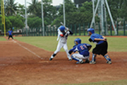

棒球比賽中防守在內野區域的球員，有投手、捕手、一壘手、二壘手、三壘手和游擊手共六人。棒球比賽防守區域區分為內野手與外野手，棒球場內野區域有分紅土與草皮兩種，比賽時內野手與外野手的守備功能不同，內野的投手除投球外也要協助守備，捕手除接球外更應協助判斷指揮處理傳球的位置。其他任務有，處理擊球員打擊至內野區域的滾地球與各種飛球，協助己方完成此局守備；協助自外野傳至內野的傳球攔截守備及做各壘的補位與後援守備等。
牛棚是專為投手練習投球的場地區域。依據棒球比賽場地的設計，棒球場必需設置投手投球練習區，讓投手在上場投球前有充足的熱身，以避免受傷。牛棚大部分位於選手休息區兩邊沿著外野界外區域設置，也有部分牛棚是設置於外野全壘打外，球場可以在室內或室外設置牛棚。在比賽前或是比賽中，先發、中繼、後援投手可在牛棚練習以及熱身，可避免被比賽進行中的球擊中，也可以避免因投球練習而妨礙到比賽的進行。
棒球比賽中代替先發球員上場打擊的候補球員。規則3.03指出，換進場之球員應依照該球隊打擊順序接替下場球員之順序打擊。一旦被更換下場之球員，就不得再出場比賽，但仍可擔任壘指導員。被換上場的代打球員不一定要完成一次的打擊才可以下場，代打的過程中，只要投手有投出一球之後，要再次啟用代打也是可以的。